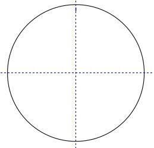
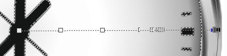

Создание часов
В этом уроке мы рассмотрим создание простого на первый взгляд предмета – часов. Несмотря на то, что они кажутся нам привычным и несложным предметом, создать их с нуля в Photo-Paint не всегда так просто. Также в этом уроке будут использованы элементы управления, которые обычно используются не часто. Поэтому этот урок будет очень полезным начинающим пользователям, т. к. позволит наглядно увидеть, как и когда используются настройки тех или иных инструментов. Кроме того, здесь будут задействованы самые разнообразные возможности всего пакета CorelDraw Graphics Suite.
К тому же я постараюсь в этом уроке расписать все достаточно подробно.
Итак приступим.
1. Создайте в Photo-Paint новый пустой документ с настройками, как на рис. 1.
2. Нажмите горячую клавишу F7, чтобы активировать инструмент Ellipse (Эллипс). На экранной палитре выберите цвет заливки – 50 % серого, для чего щелкните на экранной палитре соответствующую цветовую ячейку правой кнопкой мыши. Нарисуйте окружность, для чего во время рисования удерживайте клавишу Ctrl. Убедитесь, что кнопка Disable fill (Выключить заливку), на Панели свойств НЕ нажата. Также установите при необходимости размер контура, в счетчике Outline width (Толщина абриса) равным 12. Размер окружности вас не должен сильно волновать. В результате у вас должна получиться серая окружность.
3. Нажмите горячую клавишу О (английскую), чтобы активировать инструмент Object Pick (Выбор объекта). На Панели свойств инструмента Object Pick (Выбор объекта), в группе счетчиков Scale (Масштаб) установите размер окружности равным 512 х 512 px. Для этого введите в верхнем счетчике значение 512, затем щелкните мышью в нижнем счетчике и тоже введите значение 512 и затем нажмите кнопку Apply transformation (Применение преобразования) (красная кнопка справа от счетчиков) (рис. 2).
4. Нажмите комбинацию клавиш Ctrl + Shift + A, чтобы вызвать диалоговое окно Align and Distribute (Выровнять и Распределить). В диалоговом окне установите переключатель в положение To Center of Document (По центру документа) (рис. 3).
На этот момент, ваш документ будет, как на рис 4.
5. Cоздадим маску из объекта, нажав комбинацию клавиш Ctrl + M. Теперь нажмите клавишу М, чтобы активизировать инструмент Mask Transform (Преобразование маски). На Панели свойств этого инструмента, в аналогичной группе счетчиков, Scale (Масштаб), установите значения 460 х 460 px и нажмите кнопку Apply transformation (Применение преобразования). Т. е. проделайте действия аналогичные, как в пункте 3. После этого, ваша маска скорее всего «съедет в сторону». Поэтому исправим эту ситуацию с помощью команды Mask > Align (Маска > Выровнять). В диалоговом окне Mask Align (Выравнивание маски) становите переключатель в положение Selected Object(s) (Выделенному объекту) (рис. 5).
Наша маска четко выровняется по центру объекта-окружности.
6. Нам нужно теперь удалить внутреннюю часть окружности. Нажмите Ctrl + Shift + стрелка вверх, чтобы вырезать выделенную часть и нажмите клавишу Delete, чтобы сразу же удалить вырезанную часть. Из получившегося объекта-кольца создайте маску, нажав Ctrl + M.
7. Для дальнейшей нашей работы потребуется плагин (plug-in) из набора Corel KPT Collection. К счастью он бесплатно предлагается для скачивания после установки CorelDraw Graphics Suite Х5. Дело в том, что создать нужный эффект посредством самого Photo-Paint сложно. Поэтому прибегнем к помощи плагина KPT Reaction из набора KPT Collection. Для этого выполните команду Effects > KPT Collection > KPT Reaction (Эффекты > KPT Collection > KPT Reaction) (рис. 6).
Сразу оговорюсь, возможно при применении плагина, вам придется подобрать значения параметров немного отличающиеся от моих. Собственные значения вам придется подобрать самостоятельно, ориентируясь по результату в окне плагина.
8. Откроется окно плагина (рис. 7).
В окне плагина имеется два интересующих нас окна. Первое из них, понятное дело – окно Preview (окно предварительного просмотра). Здесь вы можете настроить размер этого окна, щелкнув на треугольнике в верхнем правом углу окна Preview. Таким образом вы получите доступ к меню Preview Options (Параметры просмотра) этого окна (рис. 8).
Я рекомендую использовать большой размер этого окна. Для этого выберите пункт Large Preview (Большой размер окна просмотра). Само же окно Preview (окно предварительного просмотра) можно перетаскивать в пределах окна плагина для удобного размещения.
В левой части окна плагина находится элемент управления – Parameters (Параметры). Этот элемент управления, напоминающий чем-то маленькое диалоговое окно, на самом деле является целым набором параметров и элементов управления. При наведении на него указателя мыши, он разворачивается из свернутого состояния по умолчанию и предоставляет доступ ко всем элементам управления (рис. 9).
В раскрывающемся списке Reaction Seed выберите пункт Voronoi (рис. 10).
В раскрывающемся списке Apply Mode оставляем (или выбираем при необходимости) режим Luminance Diffused.
Переместите ползунок Width до значения 25. Во время перемещения ползунка, появляется дополнительная шкала, а внизу отображается текущее значение параметра (рис. 11).
Аналогичным образом установите значения: Diffusion – 85%, а Spacing – 1,4. В окне просмотра вы увидите результат изменения параметров (рис. 12).
Щелкните в правом нижнем углу окна плагина круглую кнопку в виде флажка (рис. 7), чтобы применить к изображению изменения. В результате окно плагина закроется и вы вернетесь в окно изображения.
9. Наше «кольцо напоминает какую-то зебру»… Теперь нам надо как-то эти «черные полосы распределить по кругу» (назовем это так). Воспользуемся фильтром Swirl (Завиток) из группы эффектов Distort (Искажение). Выполните команду Effects > Distort > Swirl (Эффекты > Искажение > Завиток). В окне фильтра Swirl (Завиток) установите настройки, как на рис. 13.
В результате изображение станет, как на рис. 14.
10. Теперь немного размоем наше кольцо с помощью фильтра Radial Blur (Радиальная размытость). Выполните команду Effects > Blur > Radial Blur (Эффекты > Размытость > Радиальная размытость). В окне фильтра установите значение Amount (Величина) равным 12 и нажмите ОК.
Напомню, что при выполнении всех наших действий, маску созданную из объекта на шаге 6, вы удалять не должны.
11. Придадим нашему кольцу объемный вид. Воспользуемся фильтром Bevel Effect (Эффект скоса). Выполните команду Effects > 3D Effects > Bevel Effect (Эффекты > Трехмерные эффекты > Эффект скоса). Настройки в фильтре показаны на рис. 15 и 16.
В результате наше «кольцо» станет, как на рис. 17.
Получилось что-то типа хромированного кольца.
12. Но оно на таковое пока не очень похоже. Это можно подправить с помощью фильтра Lighting Effects (Эффекты освещения). Выполните команду Effects > Camera > Lighting Effects (Эффекты > Камера > Эффекты освещения). Чтобы получить нужный мне результат, я использовал в окне фильтра несколько источников света (рис. 18).
Источники света, как вы догадываетесь, добавляются с помощью кнопки в виде лампочки со знаком плюс. Я использовал 4 источника света. Настройки изменял только на вкладке Light Sourse (Источник света), на остальных вкладках настройки остались по умолчанию. Обратите внимание, что три источника света я развернул перпендикулярно к кольцу, а правый нижний источник немного развернул, чтобы он был «более касательным», а не перпендикулярным. Настройки принятые для каждого из 4-х источников света показаны на рис. 19 – 22.

Положение каждого источника можете определить по значениям в группе счетчиков Position (Положение).
После применения фильтра, получим результат, как на рис. 23.
Сравните результаты на рис. 17 и 23. Лично, как на мой вкус, на рис. 23 кольцо выглядит лучше. Но это мой вкус и вы конечно можете с ним не согласиться и сделать по-своему. Я остановлюсь на этом варианте, но можно немного улучшить вид, например, с помощью фильтров Contrast Enhancement (Увеличение контрастности) или Brightness/Contrast/Intensity (Яркость/Контрастность/Интенсивность) или применив другие настройки в фильтре Lighting Effects (Эффекты освещения).
13. Теперь займемся стрелками и циферблатом. Вот в этой ситуации нам понадобится помощь Corel Draw. Как вы понимаете сами, Draw располагает всеми нужными средствами, чтобы выполнить такую задачу с минимальными «трудозатратами». Откройте Corel Draw. Создайте пустой документ. В диалоговом окне Create a New Document установите настройки, как на рис. 24.
Я оставил такое же разрешение, как и в изображении с «кольцом» созданным в Photo-Paint, т. е. 300 dpi. Размер листа – А4, я оставил по своей лености, хотя нам хватило бы листа с более скромными размерами.
14. В окне Corel Draw, я установил направляющие, примерно по середине листа, для облегчения нашей работы. Помня, что внутренний размер нашего «кольца» равен 460 х 460 px, нарисуем для ориентира окружность такого же размера, с центром на пересечении направляющих. Включите привязку к направляющим, зайдя в меню View (Вид) и щелкнув пункт Snap to Guidelines (Привязывать к направляющим). Нарисуем вертикальную линию толщиной 3 px и длиной 12 px, (рис. 25), соответствующую отметке 12 часов.

15. Выделите созданную риску и щелкните еще раз на ней мышью, чтобы переключиться на режим вращения. После второго щелчка на риске, вы увидите центр вращения (центральную точку). Стащите его вниз на пересечение направляющих. Нажмите сочетание клавиш Alt + F7, чтобы открыть докер Transformation (Преобразования). В докере перейдите на вкладку Rotate (Вращение) и установите значения параметров, как на рис. 26. Естественно, что координаты в счетчиках Center (Центр) у вас могут отличаться от моих.
После задания значений в докере, нажмите кнопку Apply (Применить). В результате Corel Draw создаст аналогичные риски, как на циферблате часов.
16. Но нам необходимо, чтобы риски соответствующие часам были длиннее и толще остальных. Для этого выделите риску, которую мы создали в самом начале. На Панели свойств в группе полей Object size (Размер объекта) измените длину риски на 16 px, а в списке Outline width (Толщина абриса) введите значение 9 px. Щелкните еще раз на риске, чтобы переключиться на режим вращения. Обратите внимание, что после изменения ее размера, центр вращения сместился. Перетащите его на пересечение направляющих. В докере измените значение Angle (Угол) на 30 градусов, а в счетчике Copies (Копий) установите значение равное 11 и нажмите Apply (Применить). Corel Draw нарисует толстые риски поверх тонких. Пусть вас не смущает тот факт, что мы не удалили тонкие риски, они нам мешать не будут.
17. Теперь займемся стрелками. Нарисуйте линию на вертикальной направляющей, длиной 260 px и толщиной 13 px. Разместите ее, как показано на рис. 27. Затем нажмите горячую клавишу F12, чтобы вызвать диалоговое окно Outline Pen (рис. 28).

В группе переключателей Line caps (Концы линий) выберите средний переключатель, соответствующий скругленным концам и нажмите OK.
18. Аналогично делаем остальные стрелки. В центре нарисуйте еще маленький кружочек и залейте его черным цветом (рис. 29). Удалите вспомогательную окружность.
19. Теперь нам нужно «наше художество» перенести в Photo-Paint. Выделите все и скопируйте в буфер обмена. Перейдите в Photo-Paint и нажмите кнопку Paste (Вставить) на Стандартной панели инструментов. Появится диалоговое окно Resample (Изменить разрешение), в котором вы должны установить разрешение вставляемого объекта в 300 dpi (рис. 30).
Теперь наше изображение примет вид, как на рис. 31.
Измените размер стрелок и циферблата соответствующим образом (рис. 32).
20. Теперь придадим внутренней части часов серый цвет. Выделите внутреннюю часть. Я просто щелкнул внутри часов инструментом Magic Wand Mask (Маска волшебной палочкой). Выберите инструмент Interactive Fill (Интерактивная заливка), нажав клавишу G. На Панели свойств выберите тип заливки – Radial (Радиальная). Настройте заливку на свой вкус или как на рис. 33.

На скриншоте не очень хорошо видно, но на самом деле я добавил 7 дополнительных «цветовых ячеек» на заливке, для придания плавного перехода цвета от светлого, к более темному. Затем применил Gaussian Blur (Размытость по Гауссу) с значением 7,4 px. Получилось как на рис. 34.
21. Теперь осталось добавить небольшую тень к стрелкам и часы готовы (рис. 35).
В этом уроке я уже не стал добавлять цифры на циферблате и придавать небольшую тень самим часам, это вы можете сделать без особого труда самостоятельно.